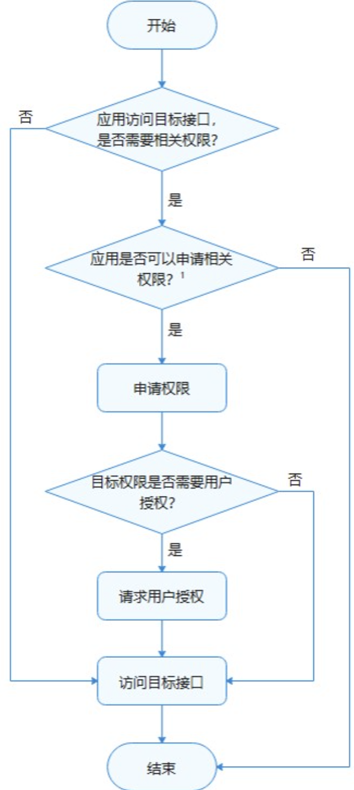
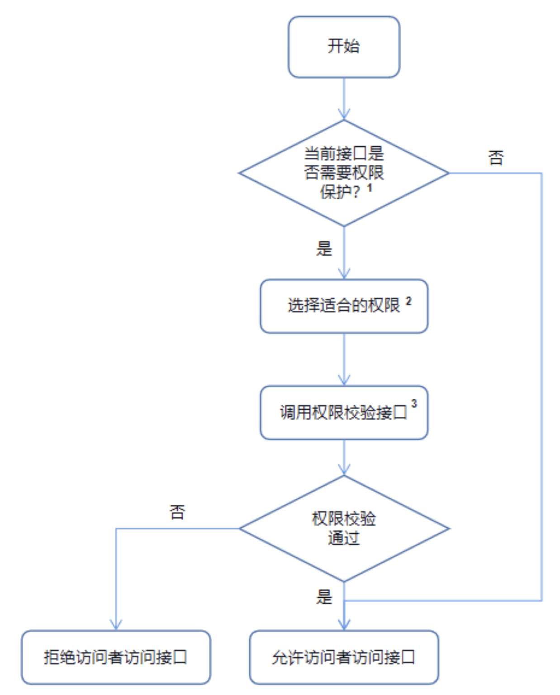
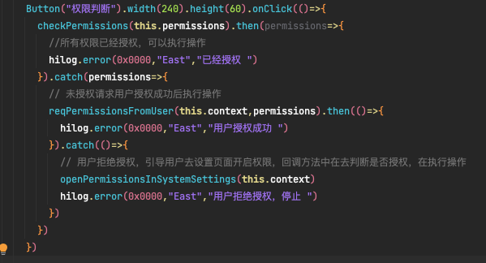
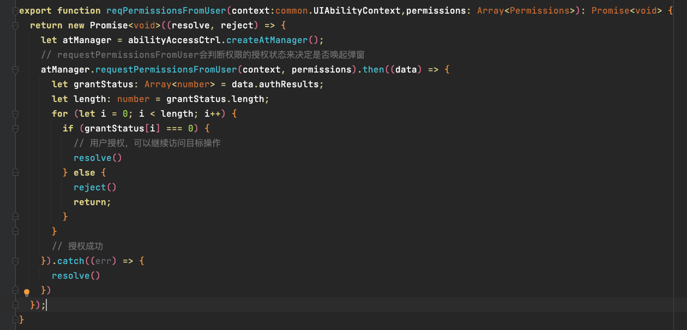

访问控制权限
概述
1 | ATM (AccessTokenManager) 是HarmonyOS上基于AccessToken构建的统一的应用权限管理能力。 |
权限使用基本原则
1 | 在进行权限的申请和使用时，需要满足以下基本原则： |
权限的工作流程
权限申请使用的工作流程
1 | 应用在访问数据或者执行操作时，需要评估该行为是否需要应用具备相关的权限。如果确认需要目标权限，则需要在应用安装包中申请目标权限。 |

权限校验的工作流程
1 | 应用在提供对外功能服务接口时，可以根据接口涉数据的敏感程度或所涉能力的安全威胁影响，在权限定义列表选择合适的权限保护当前接口，对访问者进行权限校验。 |

权限等级
| APL级别 | 说明 |
|---|---|
| system_core等级 | 该等级的应用服务提供操作系统核心能力。 |
| system_basic等级 | 该等级的应用服务提供系统基础服务。 |
| normal等级 | 普通应用。 |
system_core权限
1 | system_core权限涉及到开放操作系统核心资源的访问操作。这部分系统资源是系统最核心的底层服务，如果遭受破坏，操作系统将无法正常运行。 |
system_basic权限
1 | system_basic权限允许应用访问操作系统基础服务相关的资源。这部分系统基础服务属于系统提供或者预置的基础功能，比如系统设置、身份认证等。这些系统资源的开放对用户隐私以及其他应用带来的风险较大。 |
normal权限
1 | normal 权限允许应用访问超出默认规则外的普通系统资源。这些系统资源的开放（包括数据和功能）对用户隐私以及其他应用带来的风险很小。 |
权限类型
1 | 根据授权方式的不同，权限类型可分为system_grant（系统授权）和user_grant（用户授权）。 |
system_grant 系统授权
1 | system_grant指的是系统授权类型，在该类型的权限许可下，应用被允许访问的数据不会涉及到用户或设备的敏感信息，应用被允许执行的操作不会对系统或者其他应用产生大的不利影响。 |
user_grant 用户授权
1 | user_grant指的是用户授权类型，在该类型的权限许可下，应用被允许访问的数据将会涉及到用户或设备的敏感信息，应用被允许执行的操作可能对系统或者其他应用产生严重的影响。 |
权限授权流程
1、权限申请
在module.json5配置文件中进行声明目标权限
1 | { |
标签说明
| 标签 | 是否必填 | 说明 |
|---|---|---|
| name | 是 | 权限名称。 |
| reason | 否 | 描述申请权限的原因。>说明 ：当申请的权限为user_grant权限时，此字段必填。 |
| usedScene | 否 | 描述权限使用的场景和时机。>说明 ：当申请的权限为user_grant权限时，此字段必填。 |
| abilities | 否 | 标识需要使用到该权限的Ability，标签为数组形式。适用模型 ：Stage模型 |
| ability | 否 | 标识需要使用到该权限的Ability，标签为数组形式。适用模型 ：FA模型 |
| when | 否 | 标识权限使用的时机，值为inuse/always。- inuse：表示为仅允许前台使用。- always：表示前后台都可使用。 |
2、权限授予
权限授予分为两种情况：
- 如果目标权限是system_grant类型，开发者在进行权限申请后，系统会在安装应用时自动为其进行权限预授予，开发者不需要做其他操作即可使用权限。
- 如果目标权限是user_grant类型，开发者在进行权限申请后，在运行时触发动态弹窗，请求用户授权 。
用户权限授予操作步骤
1、module.json5配置文件中申请权限。
2、校验权限是否授权。
在进行权限申请之前，需要先检查当前应用程序是否已经被授予了权限。可以通过调用checkAccessToken()方法来校验当前是否已经授权。如果已经授权，则可以直接访问目标操作，否则需要进行下一步操作，即向用户申请授权。
import bundleManager from ‘@ohos.bundle.bundleManager’;
import abilityAccessCtrl, { Permissions } from ‘@ohos.abilityAccessCtrl’;async function checkAccessToken(permission: Permissions): Promise<abilityAccessCtrl.GrantStatus> {
let atManager = abilityAccessCtrl.createAtManager();
let grantStatus: abilityAccessCtrl.GrantStatus;// 获取应用程序的accessTokenID
let tokenId: number;
try {
let bundleInfo: bundleManager.BundleInfo = await bundleManager.getBundleInfoForSelf(bundleManager.BundleFlag.GET_BUNDLE_INFO_WITH_APPLICATION);
let appInfo: bundleManager.ApplicationInfo = bundleInfo.appInfo;
tokenId = appInfo.accessTokenId;
} catch (err) {
console.error(getBundleInfoForSelf failed, code is ${err.code}, message is ${err.message});
}// 校验应用是否被授予权限
try {
grantStatus = await atManager.checkAccessToken(tokenId, permission);
} catch (err) {
console.error(checkAccessToken failed, code is ${err.code}, message is ${err.message});
}return grantStatus;
}async function checkPermissions(): Promise
<void>{
const permissions: Array<Permissions>= [‘ohos.permission.READ_CALENDAR’];
let grantStatus: abilityAccessCtrl.GrantStatus = await checkAccessToken(permissions[0]);if (grantStatus === abilityAccessCtrl.GrantStatus.PERMISSION_GRANTED) {
// 已经授权，可以继续访问目标操作
} else {
// 申请日历权限
}
}
3、动态想用户申请权限授权。
import abilityAccessCtrl, { Permissions } from ‘@ohos.abilityAccessCtrl’;
import common from ‘@ohos.app.ability.common’;const permissions: Array
<Permissions>= [‘ohos.permission.READ_CALENDAR’];@Entry
@Component
struct Index {
reqPermissionsFromUser(permissions: Array<Permissions>): void {
let context = getContext(this) as common.UIAbilityContext;
let atManager = abilityAccessCtrl.createAtManager();
// requestPermissionsFromUser会判断权限的授权状态来决定是否唤起弹窗
atManager.requestPermissionsFromUser(context, permissions).then((data) => {
let grantStatus: Array<number>= data.authResults;
let length: number = grantStatus.length;
for (let i = 0; i < length; i++) {
if (grantStatus[i] === 0) {
// 用户授权，可以继续访问目标操作
} else {
// 用户拒绝授权，提示用户必须授权才能访问当前页面的功能，并引导用户到系统设置中打开相应的权限
return;
}
}
// 授权成功
}).catch((err) => {
console.error(requestPermissionsFromUser failed, code is ${err.code}, message is ${err.message});
})
}// 页面展示
build() {
// …
}
}
4、处理授权结果
function openPermissionsInSystemSettings(): void {
let context = getContext(this) as common.UIAbilityContext;
let wantInfo = {
action: ‘action.settings.app.info’,
parameters: {
settingsParamBundleName: ‘com.example.myapplication’ // 打开指定应用的详情页面
}
}
context.startAbility(wantInfo).then(() => {
// …
}).catch((err) => {
// …
})
}
权限授予函数调用

权限授予函数实现
检查权限是否授权
请求权限授予

权限列表
| 权限名称 | 权限说明 | 权限级别 | 授权方式 |
|---|---|---|---|
| ohos.permission.USE_BLUETOOTH | 允许应用查看蓝牙的配置。 | normal | system_grant |
| ohos.permission.DISCOVER_BLUETOOTH | 允许应用配置本地蓝牙，查找远端设备且与之配对连接。 | normal | system_grant |
| ohos.permission.MANAGE_BLUETOOTH | 允许应用配对蓝牙设备，并对设备的电话簿或消息进行访问。 | system_basic | system_grant |
| ohos.permission.INTERNET | 允许使用Internet网络。 | normal | system_grant |
| ohos.permission.MODIFY_AUDIO_SETTINGS | 允许应用修改音频设置。 | normal | system_grant |
| ohos.permission.ACCESS_NOTIFICATION_POLICY | 在本设备上允许应用访问通知策略。 | normal | system_grant |
| ohos.permission.GET_TELEPHONY_STATE | 允许应用读取电话信息。 | system_basic | system_grant |
| ohos.permission.REQUIRE_FORM | 允许应用获取Ability Form。 | system_basic | system_grant |
| ohos.permission.GET_NETWORK_INFO | 允许应用获取数据网络信息。 | normal | system_grant |
| ohos.permission.PLACE_CALL | 允许应用直接拨打电话。 | system_basic | system_grant |
| ohos.permission.SET_NETWORK_INFO | 允许应用配置数据网络。 | normal | system_grant |
| ohos.permission.REMOVE_CACHE_FILES | 允许清理指定应用的缓存。 | system_basic | system_grant |
| ohos.permission.REBOOT | 允许应用重启设备。 | system_basic | system_grant |
| ohos.permission.RUNNING_LOCK | 允许应用获取运行锁，保证应用在后台的持续运行。 | normal | system_grant |
| ohos.permission.SET_TIME | 允许应用修改系统时间。 | system_basic | system_grant |
| ohos.permission.SET_TIME_ZONE | 允许应用修改系统时区。 | system_basic | system_grant |
| ohos.permission.DOWNLOAD_SESSION_MANAGER | 允许应用管理下载任务会话。 | system_core | system_grant |
| ohos.permission.COMMONEVENT_STICKY | 允许应用发布粘性公共事件。 | normal | system_grant |
| ohos.permission.SYSTEM_FLOAT_WINDOW | 允许应用使用悬浮窗的能力。 | system_basic | system_grant |
| ohos.permission.PRIVACY_WINDOW | 允许应用将窗口设置为隐私窗口，禁止截屏录屏。 | system_basic | system_grant |
| ohos.permission.POWER_MANAGER | 允许应用调用电源管理子系统的接口休眠或者唤醒设备。 | system_core | system_grant |
| ohos.permission.REFRESH_USER_ACTION | 允许应用在收到用户事件时，重新计算超时时间。 | system_basic | system_grant |
| ohos.permission.POWER_OPTIMIZATION | 允许系统应用设置省电模式、获取省电模式的配置信息并接收配置变化的通知。 | system_basic | system_grant |
| ohos.permission.REBOOT_RECOVERY | 允许系统应用重启设备并进入恢复模式。 | system_basic | system_grant |
| ohos.permission.MANAGE_LOCAL_ACCOUNTS | 允许应用管理本地用户帐号。 | system_basic | system_grant |
| ohos.permission.INTERACT_ACROSS_LOCAL_ACCOUNTS | 允许多个系统帐号之间相互访问。 | system_basic | system_grant |
| ohos.permission.VIBRATE | 允许应用控制马达振动。 | normal | system_grant |
| ohos.permission.CONNECT_IME_ABILITY | 允许绑定输入法Ability（InputMethodAbility）。 | system_core | system_grant |
| ohos.permission.CONNECT_SCREEN_SAVER_ABILITY | 允许绑定屏保Ability（ScreenSaverAbility）。 | system_core | system_grant |
| ohos.permission.READ_SCREEN_SAVER | 允许应用查询屏保状态信息。 | system_basic | system_grant |
| ohos.permission.WRITE_SCREEN_SAVER | 允许应用修改屏保状态信息。 | system_basic | system_grant |
| ohos.permission.SET_WALLPAPER | 允许应用设置静态壁纸。 | normal | system_grant |
| ohos.permission.GET_WALLPAPER | 允许应用读取壁纸文件。 | system_basic | system_grant |
| ohos.permission.CHANGE_ABILITY_ENABLED_STATE | 允许改变应用或者组件的使能状态。 | system_basic | system_grant |
| ohos.permission.ACCESS_MISSIONS | 允许应用访问任务栈信息。 | system_basic | system_grant |
| ohos.permission.CLEAN_BACKGROUND_PROCESSES | 允许应用根据包名清理相关后台进程。 | normal | system_grant |
| ohos.permission.KEEP_BACKGROUND_RUNNING | 允许Service Ability在后台持续运行。 | normal | system_grant |
| ohos.permission.UPDATE_CONFIGURATION | 允许更新系统配置。 | system_basic | system_grant |
| ohos.permission.UPDATE_SYSTEM | 允许调用升级接口。 | system_basic | system_grant |
| ohos.permission.FACTORY_RESET | 允许调用恢复出厂接口。 | system_basic | system_grant |
| ohos.permission.GRANT_SENSITIVE_PERMISSIONS | 允许应用为其他应用授予敏感权限。 | system_core | system_grant |
| ohos.permission.REVOKE_SENSITIVE_PERMISSIONS | 允许应用撤销给其他应用授予的敏感信息。 | system_core | system_grant |
| ohos.permission.GET_SENSITIVE_PERMISSIONS | 允许应用读取其他应用的敏感权限的状态。 | system_core | system_grant |
| ohos.permission.INTERACT_ACROSS_LOCAL_ACCOUNTS_EXTENSION | 允许应用跨用户对其他应用的属性进行设置。 | system_core | system_grant |
| ohos.permission.LISTEN_BUNDLE_CHANGE | 允许应用监听其他应用安装、更新、卸载状态的变化。 | system_basic | system_grant |
| ohos.permission.GET_BUNDLE_INFO | 允许应用查询其他应用的信息。该权限仅适用于三方应用。 | normal | system_grant |
| ohos.permission.GET_BUNDLE_INFO_PRIVILEGED | 允许应用查询其他应用的信息。该权限仅适用于特权应用、同签名应用。 | system_basic | system_grant |
| ohos.permission.ACCELEROMETER | 允许应用读取加速度传感器的数据。 | normal | system_grant |
| ohos.permission.GYROSCOPE | 允许应用读取陀螺仪传感器的数据。 | normal | system_grant |
| ohos.permission.INSTALL_BUNDLE | 允许应用安装、卸载其他应用。 | system_core | system_grant |
| ohos.permission.MANAGE_SHORTCUTS | 允许应用查询其他应用的快捷方式信息、启动其他应用的快捷方式。 | system_core | system_grant |
| ohos.permission.radio.ACCESS_FM_AM | 允许应用获取收音机相关服务。 | system_core | system_grant |
| ohos.permission.SET_TELEPHONY_STATE | 允许应用修改telephone的状态。 | system_basic | system_grant |
| ohos.permission.START_ABILITIES_FROM_BACKGROUND | 允许应用在后台启动或者访问其他组件。 | system_basic | system_grant |
| ohos.permission.BUNDLE_ACTIVE_INFO | 允许系统应用查询其他应用在前台或后台的运行时间。 | system_basic | system_grant |
| ohos.permission.START_INVISIBLE_ABILITY | 无论Ability是否可见，都允许应用进行调用。 | system_core | system_grant |
| ohos.permission.sec.ACCESS_UDID | 允许系统应用获取UDID。 | system_basic | system_grant |
| ohos.permission.LAUNCH_DATA_PRIVACY_CENTER | 允许应用从其隐私声明页面跳转至”数据与隐私”页面。 | system_basic | system_grant |
| ohos.permission.MANAGE_MEDIA_RESOURCES | 允许应用程序获取当前设备正在播放的媒体资源，并对其进行管理。 | system_basic | system_grant |
| ohos.permission.PUBLISH_AGENT_REMINDER | 允许该应用使用后台代理提醒。 | normal | system_grant |
| ohos.permission.CONTROL_TASK_SYNC_ANIMATOR | 允许应用使用同步任务动画。 | system_core | system_grant |
| ohos.permission.INPUT_MONITORING | 允许应用监听输入事件，仅系统签名应用可申请此权限。 | system_core | system_grant |
| ohos.permission.MANAGE_MISSIONS | 允许用户管理元能力任务栈。 | system_core | system_grant |
| ohos.permission.NOTIFICATION_CONTROLLER | 允许应用管理通知和订阅通知。 | system_core | system_grant |
| ohos.permission.CONNECTIVITY_INTERNAL | 允许应用程序获取网络相关的信息或修改网络相关设置。 | system_basic | system_grant |
| ohos.permission.SET_ABILITY_CONTROLLER | 允许设置ability组件启动和停止控制权。 | system_basic | system_grant |
| ohos.permission.USE_USER_IDM | 允许应用访问系统身份凭据信息。 | system_basic | system_grant |
| ohos.permission.MANAGE_USER_IDM | 允许应用使用系统身份凭据管理能力进行口令、人脸、指纹等录入、修改、删除等操作。 | system_basic | system_grant |
| ohos.permission.ACCESS_BIOMETRIC | 允许应用使用生物特征识别能力进行身份认证。 | normal | system_grant |
| ohos.permission.ACCESS_USER_AUTH_INTERNAL | 允许应用使用系统身份认证能力进行用户身份认证或身份识别。 | system_basic | system_grant |
| ohos.permission.ACCESS_PIN_AUTH | 允许应用使用口令输入接口，用于系统应用完成口令输入框绘制场景。 | system_basic | system_grant |
| ohos.permission.GET_RUNNING_INFO | 允许应用获取运行态信息。 | system_basic | system_grant |
| ohos.permission.CLEAN_APPLICATION_DATA | 允许应用清理应用数据。 | system_basic | system_grant |
| ohos.permission.RUNNING_STATE_OBSERVER | 允许应用观察应用状态。 | system_basic | system_grant |
| ohos.permission.CAPTURE_SCREEN | 允许应用截取屏幕图像。 | system_core | system_grant |
| ohos.permission.GET_WIFI_INFO | 允许应用获取WLAN信息。 | normal | system_grant |
| ohos.permission.GET_WIFI_INFO_INTERNAL | 允许应用获取WLAN信息。 | system_core | system_grant |
| ohos.permission.SET_WIFI_INFO | 允许应用配置WLAN设备。 | normal | system_grant |
| ohos.permission.GET_WIFI_PEERS_MAC | 允许应用获取对端WLAN或者蓝牙设备的MAC地址。 | system_core | system_grant |
| ohos.permission.GET_WIFI_LOCAL_MAC | 允许应用获取本机WLAN或者蓝牙设备的MAC地址。 | system_basic | system_grant |
| ohos.permission.GET_WIFI_CONFIG | 允许应用获取WLAN配置信息。 | system_basic | system_grant |
| ohos.permission.SET_WIFI_CONFIG | 允许应用配置WLAN信息。 | system_basic | system_grant |
| ohos.permission.MANAGE_WIFI_CONNECTION | 允许应用管理WLAN连接。 | system_core | system_grant |
| ohos.permission.MANAGE_WIFI_HOTSPOT | 允许应用开启或者关闭WLAN热点。 | system_core | system_grant |
| ohos.permission.GET_ALL_APP_ACCOUNTS | 允许应用获取所有应用账户信息。 | system_core | system_grant |
| ohos.permission.MANAGE_SECURE_SETTINGS | 允许应用修改安全类系统设置。 | system_basic | system_grant |
| ohos.permission.READ_DFX_SYSEVENT | 允许应用访问系统事件打点数据。 | system_basic | system_grant |
| ohos.permission.MANAGE_ENTERPRISE_DEVICE_ADMIN | 允许应用激活设备管理员应用。 | system_core | system_grant |
| ohos.permission.SET_ENTERPRISE_INFO | 允许设备管理员应用设置企业信息。 | system_basic | system_grant |
| ohos.permission.ENTERPRISE_SUBSCRIBE_MANAGED_EVENT | 允许设备管理员应用订阅管理事件。 | system_basic | system_grant |
| ohos.permission.ENTERPRISE_SET_DATETIME | 允许设备管理员应用设置系统时间。 | system_basic | system_grant |
| ohos.permission.ENTERPRISE_GET_DEVICE_INFO | 允许设备管理员读取设备信息。 | system_basic | system_grant |
| ohos.permission.NFC_TAG | 允许应用读取Tag卡片。 | normal | system_grant |
| ohos.permission.NFC_CARD_EMULATION | 允许应用实现卡模拟功能。 | normal | system_grant |
| ohos.permission.PERMISSION_USED_STATS | 允许系统应用访问权限使用记录。 | system_basic | system_grant |
| ohos.permission.NOTIFICATION_AGENT_CONTROLLER | 允许应用发送代理通知。 | system_core | system_grant |
| ohos.permission.ANSWER_CALL | 允许应用接听来电。 | system_basic | user_grant |
| ohos.permission.READ_CALENDAR | 允许应用读取日历信息。 | normal | user_grant |
| ohos.permission.READ_CALL_LOG | 允许应用读取通话记录。 | system_basic | user_grant |
| ohos.permission.READ_CELL_MESSAGES | 允许应用读取设备收到的小区广播信息。 | system_basic | user_grant |
| ohos.permission.READ_CONTACTS | 允许应用读取联系人数据。 | system_basic | user_grant |
| ohos.permission.READ_MESSAGES | 允许应用读取短信息。 | system_basic | user_grant |
| ohos.permission.RECEIVE_MMS | 允许应用接收和处理彩信。 | system_basic | user_grant |
| ohos.permission.RECEIVE_SMS | 允许应用接收和处理短信。 | system_basic | user_grant |
| ohos.permission.RECEIVE_WAP_MESSAGES | 允许应用接收和处理WAP消息。 | system_basic | user_grant |
| ohos.permission.MICROPHONE | 允许应用使用麦克风。 | normal | user_grant |
| ohos.permission.SEND_MESSAGES | 允许应用发送短信。 | system_basic | user_grant |
| ohos.permission.WRITE_CALENDAR | 允许应用添加、移除或更改日历活动。 | normal | user_grant |
| ohos.permission.WRITE_CALL_LOG | 允许应用添加、移除或更改通话记录。 | system_basic | user_grant |
| ohos.permission.WRITE_CONTACTS | 允许应用添加、移除或更改联系人数据。 | system_basic | user_grant |
| ohos.permission.DISTRIBUTED_DATASYNC | 允许不同设备间的数据交换。 | normal | user_grant |
| ohos.permission.MANAGE_VOICEMAIL | 允许应用在语音信箱中留言。 | system_basic | user_grant |
| ohos.permission.LOCATION_IN_BACKGROUND | 允许应用在后台运行时获取设备位置信息。 | normal | user_grant |
| ohos.permission.LOCATION | 允许应用获取设备位置信息。 | normal | user_grant |
| ohos.permission.APPROXIMATELY_LOCATION | 允许应用获取设备模糊位置信息。 | normal | user_grant |
| ohos.permission.MEDIA_LOCATION | 允许应用访问用户媒体文件中的地理位置信息。 | normal | user_grant |
| ohos.permission.CAMERA | 允许应用使用相机拍摄照片和录制视频。 | normal | user_grant |
| ohos.permission.READ_MEDIA | 允许应用读取用户外部存储中的媒体文件信息。 | normal | user_grant |
| ohos.permission.WRITE_MEDIA | 允许应用读写用户外部存储中的媒体文件信息。 | normal | user_grant |
| ohos.permission.ACTIVITY_MOTION | 允许应用读取用户当前的运动状态。 | normal | user_grant |
| ohos.permission.READ_HEALTH_DATA | 允许应用读取用户的健康数据。 | normal | user_grant |
| ohos.permission.GET_DEFAULT_APPLICATION | 允许应用查询默认应用。 | system_core | system_grant |
| ohos.permission.SET_DEFAULT_APPLICATION | 允许应用设置、重置默认应用。 | system_core | system_grant |
| ohos.permission.MANAGE_DISPOSED_APP_STATUS | 允许设置和查询应用的处置状态。 | system_core | system_grant |
| ohos.permission.ACCESS_IDS | 允许应用查询设备的唯一标识符信息。 | system_core | system_grant |
| ohos.permission.DUMP | 允许导出系统基础信息和SA服务信息。 | system_core | system_grant |
| ohos.permission.DISTRIBUTED_SOFTBUS_CENTER | 允许不同设备之间进行组网处理。 | system_basic | system_grant |
| ohos.permission.ACCESS_DLP_FILE | 允许对DLP文件进行权限配置和管理。 | system_core | system_grant |
| ohos.permission.PROVISIONING_MESSAGE | 允许激活超级设备管理器应用。 | system_core | system_grant |
| ohos.permission.ACCESS_SYSTEM_SETTINGS | 允许应用接入或拉起系统设置界面。 | system_basic | system_grant |
| ohos.permission.READ_IMAGEVIDEO | 允许读取用户公共目录的图片或视频文件。 | system_basic | user_grant |
| ohos.permission.READ_AUDIO | 允许读取用户公共目录的音频文件。 | system_basic | user_grant |
| ohos.permission.READ_DOCUMENT | 允许读取用户公共目录的文档。 | system_basic | user_grant |
| ohos.permission.WRITE_IMAGEVIDEO | 允许修改用户公共目录的图片或视频文件。 | system_basic | user_grant |
| ohos.permission.WRITE_AUDIO | 允许修改用户公共目录的音频文件。 | system_basic | user_grant |
| ohos.permission.WRITE_DOCUMENT | 允许修改用户公共目录的文档。 | system_basic | user_grant |
| ohos.permission.ABILITY_BACKGROUND_COMMUNICATION | 允许应用将Ability组件在后台启动并与该Ability建立通信连接。 | system_basic | system_grant |
| ohos.permission.securityguard.REPORT_SECURITY_INFO | 允许应用上报风险数据至设备风险管理平台。 | system_basic | system_grant |
| ohos.permission.securityguard.REQUEST_SECURITY_MODEL_RESULT | 允许应用获取设备风险状态。 | system_basic | system_grant |
| ohos.permission.securityguard.REQUEST_SECURITY_EVENT_INFO | 允许应用获取风险详细数据。 | system_core | system_grant |
| ohos.permission.READ_ACCESSIBILITY_CONFIG | 允许应用读取无障碍配置信息。 | system_basic | system_grant |
| ohos.permission.WRITE_ACCESSIBILITY_CONFIG | 允许应用设置无障碍配置信息。 | system_basic | system_grant |
| ohos.permission.ACCESS_CERT_MANAGER_INTERNAL | 允许应用进行证书及凭据的安装、卸载、启用、禁用等操作。 | system_basic | system_grant |
| ohos.permission.ACCESS_CERT_MANAGER | 允许应用进行私有凭据的相关操作、查询证书状态等操作。 | normal | system_grant |
| ohos.permission.ACCESS_PUSH_SERVICE | 允许应用访问推送服务的Ability。 | system_basic | system_grant |
| ohos.permission.RECEIVER_STARTUP_COMPLETED | 允许应用订阅开机广播。 | system_basic | system_grant |
| ohos.permission.MANAGE_CAMERA_CONFIG | 允许应用进行全局相机开关等操作。 | system_basic | system_grant |
| ohos.permission.READ_WHOLE_CALENDAR | 允许应用读取所有的日历信息。 | system_basic | user_grant |
| ohos.permission.WRITE_WHOLE_CALENDAR | 允许应用添加、移除或更改所有的日历活动。 | system_basic | user_grant |
| ohos.permission.ENFORCE_USER_IAM | 允许SA无token删除IAM子系统用户信息。 | system_core | system_grant |
| ohos.permission.ACCESS_AUTH_RESPOOL | 允许SA注册执行器。 | system_core | system_grant |
| ohos.permission.MOUNT_UNMOUNT_MANAGER | 允许应用对外卡进行挂载卸载操作。 | system_basic | system_grant |
| ohos.permission.MOUNT_FORMAT_MANAGER | 允许应用对外卡进行格式化操作。 | system_basic | system_grant |
| ohos.permission.STORAGE_MANAGER | 允许应用调用storage manager服务中对空间统计以及卷信息的查询接口。 | system_basic | system_grant |
| ohos.permission.BACKUP | 允许应用拥有备份恢复能力。 | system_basic | system_grant |
| ohos.permission.FILE_ACCESS_MANAGER | 允许文件管理类应用通过FAF框架访问公共数据文件。 | system_basic | system_grant |
| ohos.permission.MANAGE_AUDIO_CONFIG | 允许应用进行全局麦克风静音等操作。 | system_basic | system_grant |
| ohos.permission.MANAGE_DISTRIBUTED_ACCOUNTS | 允许应用管理系统分布式帐号信息。 | system_basic | system_grant |
| ohos.permission.GET_DISTRIBUTED_ACCOUNTS | 允许应用查询系统分布式帐号信息。 | system_basic | system_grant |
| ohos.permission.GET_LOCAL_ACCOUNTS | 允许应用查询系统本地帐号信息。 | system_basic | system_grant |